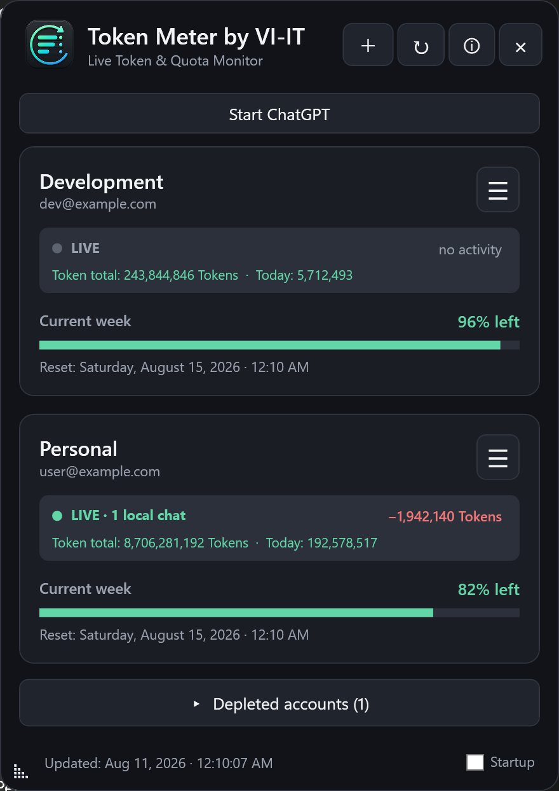

Weekly quota
Compare remaining percentages and exact reset times for every linked account.
Windows desktop widget
Monitor remaining weekly quota and account token totals across multiple ChatGPT accounts, plus live Codex activity detected on the current Windows PC.
Download for Windows Deutsche Anleitung
Compare remaining percentages and exact reset times for every linked account.
See how many Codex chats are actively processing on this Windows PC. Other devices are not included in this live count.
Accounts with usable capacity stay at the top; depleted accounts remain collapsed.
Future GitHub releases download and install silently when Token Meter starts.

Token Meter requests no passwords and uses no analytics, advertising or VI-IT cloud service. Profiles and authentication material created after OpenAI sign-in remain on the local Windows device. The installer contains no developer accounts, user sessions, cookies, caches or access tokens.
The installer is currently not Authenticode-signed, so Windows SmartScreen may show an unknown-publisher warning. Download only from the official GitHub repository and verify the SHA-256 checksum.
Token Meter by VI-IT zeigt für mehrere getrennt angemeldete ChatGPT-/OpenAI-Konten das verbleibende Codex-Wochenkontingent und kontobezogene Tokenstände. Die LIVE-Anzeige zählt ausschließlich aktive Codex-Chats auf diesem Windows-PC; andere Geräte sind darin nicht enthalten.
Installer herunterladen, ausführen, Token Meter starten und über + die offizielle OpenAI-Anmeldung öffnen.
Unter deutschem Windows erscheint die Oberfläche auf Deutsch, bei allen anderen Windows-Sprachen auf Englisch.
Die Windows-Mitteilung erscheint einmalig nur beim exakten Übergang von 11 % auf 10 %.
Konten und Authentifizierungsdaten bleiben lokal auf deinem Windows-Gerät.
Support is voluntary and does not unlock features. Die Unterstützung ist freiwillig und schaltet keine Funktionen frei.
Ko-fiPayPal